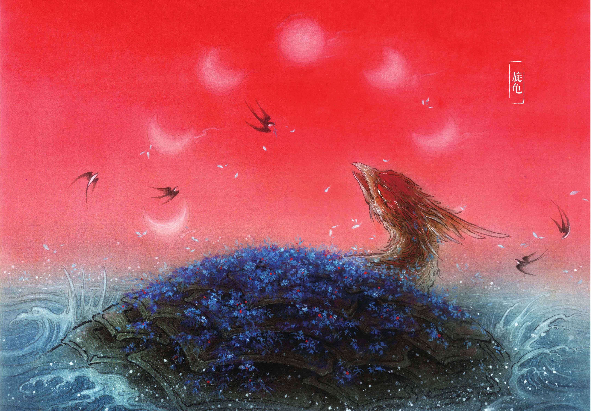
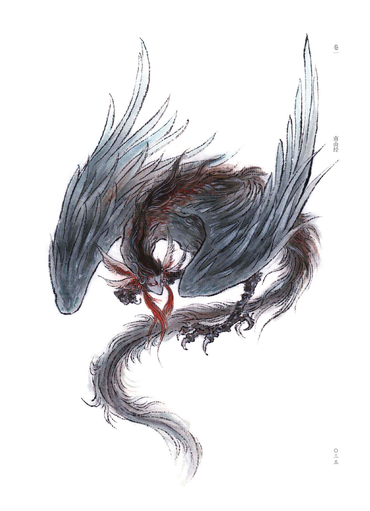
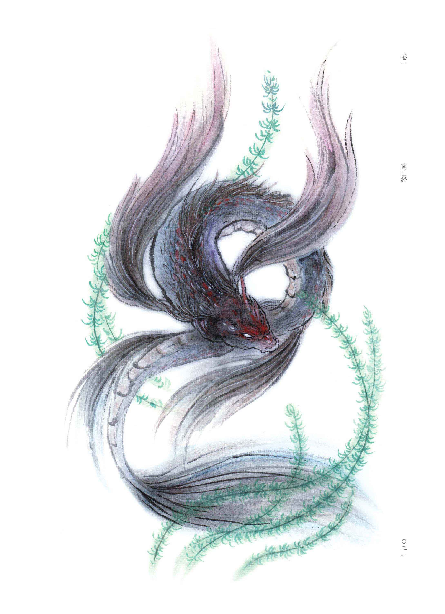
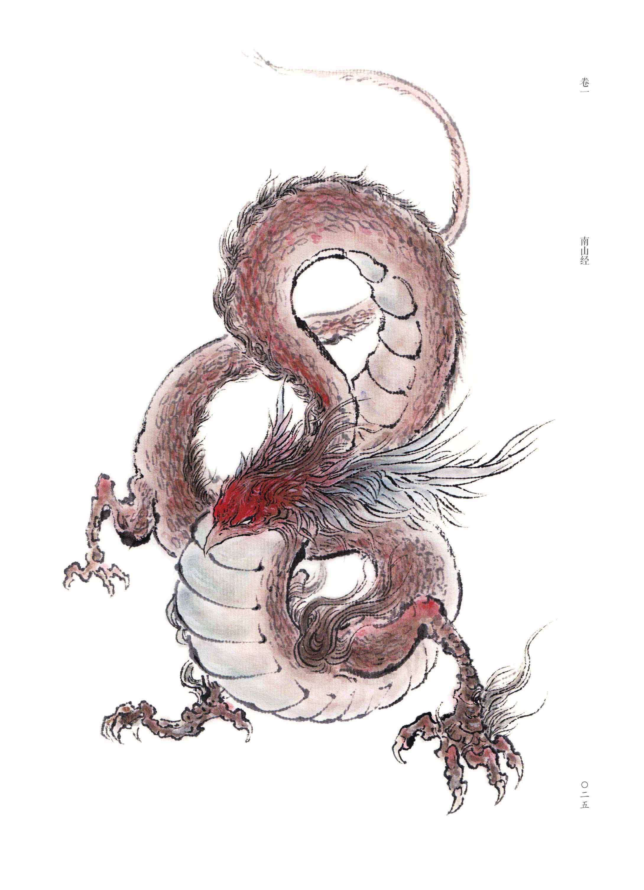
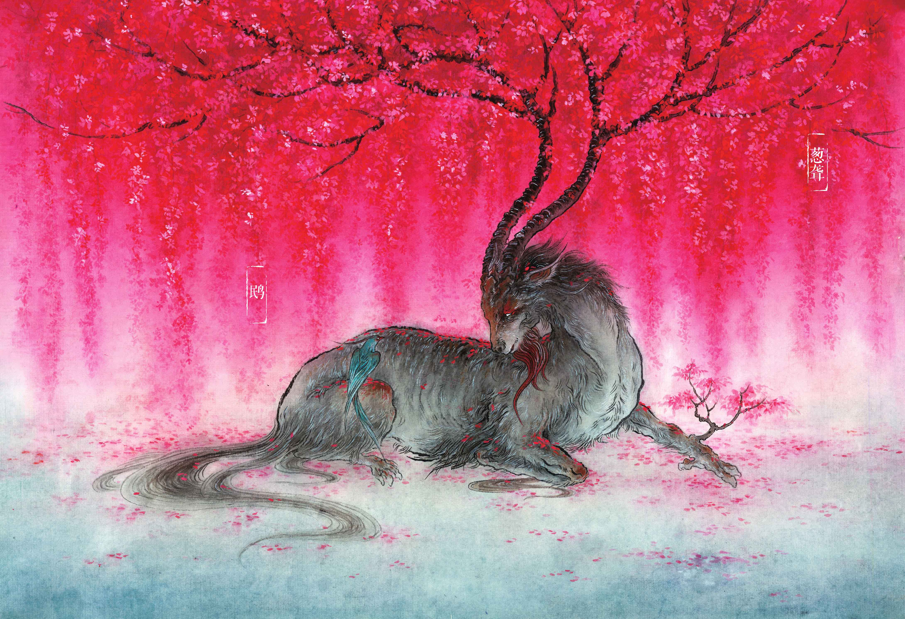
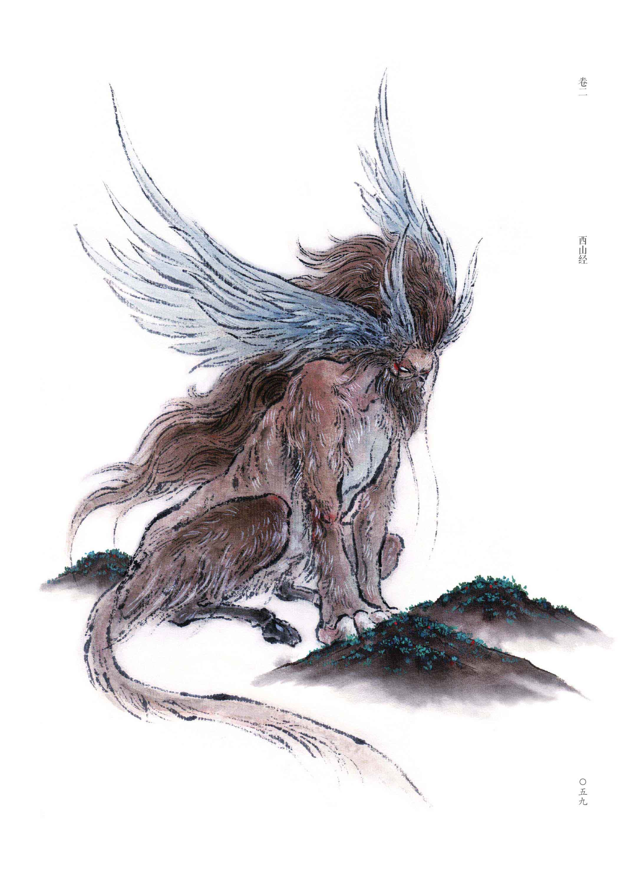
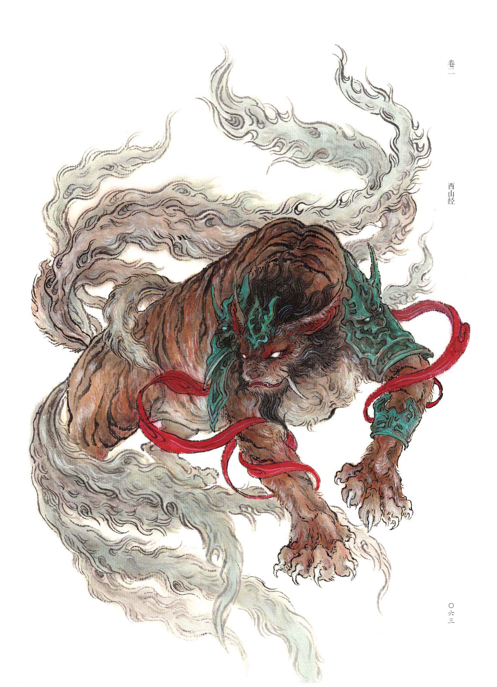
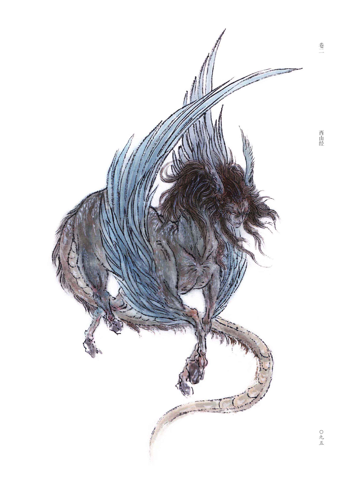
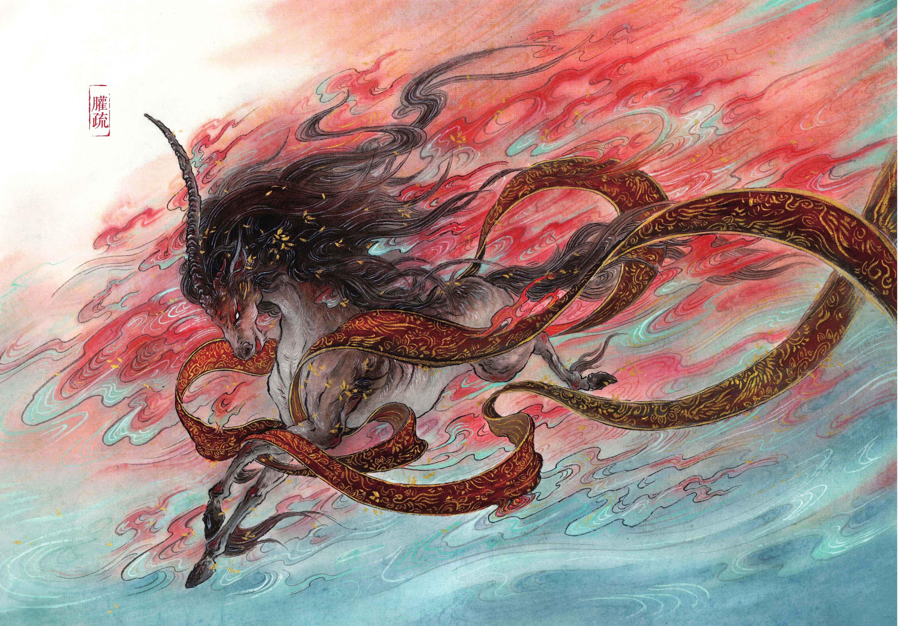
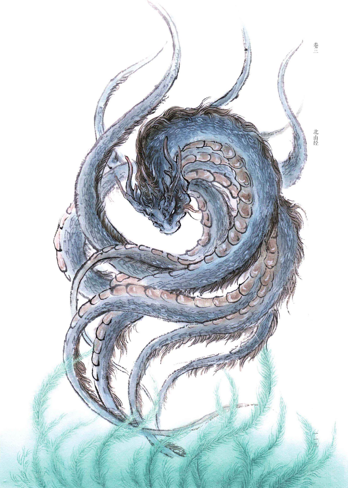

游历山川河海 踏上寻妖探鬼之路
选录《山海经》中前三卷的部分内容，一起领略志怪传说中的中国妖怪美学 -
《山海经》总览
中国妖怪，是中式美学不可或缺的一环。妖怪形象有文字记载的以先秦时代为开端，距今已有两千多年历史。而它们的开山鼻祖“古今语怪之祖”，正是《山海经》中的妖鬼们。
中国是一个神话大国，也是妖怪大国，中国的妖怪文化源远流长，如同基因一般，自远古先民的血液中一直流传至今，深深扎根于国人的灵魂之中，是中华文化绵延至今的一条重要动脉.

line line line line line line line line line line line line line
南山经
《南山经》记录了以招摇山、柜山以及天虞山为首的南方三大系的自然风貌和异兽矿藏,以及各大山系山神的祭祀情况.三大山系共辖有大小四十列山脉,总长度为一万六千三百八十里.
西山经
《西山经》介绍了以钱来山、铃山、崇吾山及阴山为首的西方四大山系的地貌矿藏和神兽珍禽,其中记载的山脉无论在现实中还是在神话里都可谓名山,耳熟能详的神话人物在这里都可见踪影.西方四大山系共计七十七列山脉,行经一万七千五百 一十七里.
北山经
《北山经》记载了北方三大山系,它们分别以单狐山、管涔山及太行山为首.此卷奇珍异兽颇多,但其神话色彩是诸山经中较为淡薄的.这一卷较为鲜明的色彩是超现实, 反映出先民追求美好生活的愿望.北方三大山系共有八十七列山脉,长达二万三千二百三十里.
卷一·南山经
✤《南山经》记录了以招摇山、柜(音矩)山以及天虞山为首的南方三大系的自然风貌和异兽矿藏,以及各大山系山神的祭祀情况.
✤ 三大山系共辖有大小四十列山脉,总长度为一万六千三百八十里.
旋龟
(杻阳之山)怪水出焉,而东流注于宪翼之水.其中多玄龟,其状如龟而鸟首虺(huī)尾,其名曰旋龟,其音如判木,佩之不聋,可以为底.
「注解」杻阳山也是怪水发源之处,许多黑色的龟在怪水中缓缓地游动,此龟名为旋龟,长着鸟的脑袋和毒蛇一般的尾巴,这种龟发出的声响就像劈木头的声音.佩戴旋龟的甲骨,可以避免耳聋, 还可以治愈脚底老茧.
颙
又东四百里,曰令丘之山,无草木,多火.其南有谷焉,曰中谷,条风自是出.有鸟焉,其状如枭,人面四目而有耳,其名曰颙(yóng),其鸣自号也,见则天下大旱.
「注解」颙是一种像枭的鸟类,生活在令丘山,面孔如人,共有四只眼睛,还有长耳朵.颙的出现会招治天下大旱.
「记载」明朝万历天启年间的首辅大臣朱国桢,在其作品《涌幢小品》中有这样的记载:「万历壬辰,颙鸟集豫章,人面四目有耳,其年夏无雨,田禾尽枯.」这一记载讲述的就是关于颙的一个小故事, 说在万历壬辰年(1592年)的夏天,成群结队的鸟儿出现在豫章这个地方,如同赶集一般.这些鸟儿「人面四目有耳」,同《山海经》所记载颙的特征完全一致.果不其然,那年夏天,当地真的没有降过一滴雨水,百姓的庄稼全都枯死了.
虎蛟
(祷过之山)泿(yín)水出焉,而南流注于海.其中有虎蛟,其状鱼身而蛇尾,其音如鸳鸯,食者不肿,可以已痔.
「传说」虎蛟居于泿水,鱼身蛇尾,叫声如同鸳鸯.食用虎蛟,可以预防肿病,治疗痔疮.
「传说」传说虎蛟是龙的一种,除了虎蛟之外,《山海经》中还记载了多种被后世归为龙的物种,如《山海经·大荒东经》中的夔(kuí)、《山海经·海内东经》和《山海经·大荒北经》均提到的应龙等. 据古籍记载,按龙的成熟程度,大致可以分为几个不同的龙属.第一类称为虬(qiú),一般是指幼小的龙,处于生长发育期,还没有长出角.第二类称作夔,《说文解字》将夔描述为「如龙一足」.第三类为蛟,长有鳞片,能发洪水,蛟千年化为龙.第四类名 叫角龙,指有角的龙,龙五百年为角龙.第五类叫做应龙,又作黄龙,是背生双翼的龙,龙千年为应龙.
龙身鸟首神
凡南次二山之首,自柜山至于漆吴之山,凡十七山,七千二百里.其神状皆龙身而鸟首.其祠:毛用一璧瘗(yì),糈(xǔ)用稌(tú).
「注解」南方第二列山中,从柜山到漆吴山,共十七座山,七千二百里.这些山的山神都是龙身鸟首.祭祀山神时,将有毛的动物和璧玉一同埋下,祭祀的精米选用稻米.
卷二·西山经
✤《西山经》介绍了以钱来山、铃山、崇吾山及阴山为首的西方四大山系的地貌矿藏和神兽珍禽,其中记载的山脉无论在现实中还是在神话里都可谓名山,关于钟山、玉山、昆仑山等的描述更是洋溢着浪漫神话色彩.耳熟能详的神话人物 如黄帝、西王母、白帝少昊等在这里都可见踪影,以及他们最本初的身形.
✤ 西方四大山系共计七十七列山脉,行经一万七千五百一十七里.
鴖和葱聋
(符禺之山)其鸟多鴖(mín),其状如翠而赤喙,可以御火.其兽多葱聋,其状如羊而赤鬣.
「注解」符禺山上的鸟以鴖鸟为主,这种鸟长得像翠鸟,嘴巴是红色的,把它养在身边可以防御火灾.同时符禺山上生活着成群结队的葱聋,这种动物 像羊,脖子上长着长而密的红毛.
「拓展」符禺山富集金属矿石,山南多铜,山北多铁.山中长有一种木本植物,名为文茎,文茎树上会结出像枣子一样的果实,耳聋的人吃下文茎果,可以恢复 听力.山中的条草也是药材,条草的外形像葵菜,开红花,结黄果,果实就像婴儿的舌头,人吃了可以免于迷惑.
英招
(槐江之山)实惟帝之平圃,神英招司之,其状马身而人面,虎文而鸟翼,徇于四海,其音如榴.南望昆仑,其光熊熊,其气魂魄.西望大泽,后稷所潜也.其中多玉,其阴多榣(yáo)木之有若.北望诸毗,槐鬼离仑居之, 鹰鹯(zhān)之所宅也.东望恒山四成,有穷鬼居之,各在一抟.
「注解」天帝有个美丽的园圃,这个园圃位于槐江山一带,这里可谓一方风水宝地.神英招管理着天帝的园圃,他人面马身,身上布满了老虎的斑纹,身侧有翅膀,发出声音时仿佛有人在抽水. 空闲时,英招喜欢巡游四海.向南望去,昆仑山气势巍峨,掩映在灿烂的光辉之中;向西望去,是槐鬼离仑居住的诸毗山,同时这里也是鹰鹯的居所;向东望去,可以看到恒山共有四重,名号为「穷」的鬼都聚集在这里.
陆吾
西南四百里,曰昆仑之丘,实惟帝之下都,神陆吾司之.其神状虎身而九尾,人面而虎爪,是神也,司天之九部及帝之囿时.
「注解」昆仑山是神话传说中天帝在人间的都城,昆仑山上有神,还有各类奇异动物和植物.陆吾是掌管昆仑山的神,是天帝手下握有实权的得力干将,不仅掌控天帝园林中畜养禽兽的时节, 还要管理天之九部即整个宇宙.陆吾身体似虎,面容如人,长着老虎的爪子,有九条尾巴.
「拓展」关于昆仑山,《山海经·海内西经》说其位于海内西北方向,是诸神聚集的地方,没有一定修为的闲杂人等不可能踏上昆仑山,因为山每一面的门都由开明兽守卫.开明兽「大类虎而九首, 皆人面」,据神话学家袁珂先生考证,开明兽就是陆吾.
孰湖
西南三百六十里,曰崦(yān)嵫(zī)之山,其上多丹木,其叶如穀(gǔ),其实大如瓜,赤符而黑理,食之已瘅(dān),可以御火.其阳多龟,其阴多玉.苕水出焉,而西流注于海,其中多砥砺.有兽焉,其状马身而鸟翼, 人面蛇尾,是好举人,名曰孰湖.
「注解」崦嵫山是孰湖的栖息地,孰湖的身形像马,面庞和人一样,身上长有鸟翅和蛇尾.
「拓展」孰湖和槐江山的英招几乎出自同一个模版,两者都是马身人面,长有鸟翼,不同之处在于英招身上有虎纹,没有蛇尾.二者的样子虽然相像,但论起英招的地位和技能,孰湖可以说是难以 望其项背.英招被尊为神,掌管天帝园圃,还能在四海内巡游,而孰湖只是喜欢将人举起.
卷三·北山经
✤《北山经》记载了北方三大山系,它们分别以单狐山、管涔山及太行山为首.此卷奇珍异兽颇多,但其神话色彩是诸山经中较为淡薄的.这一卷较为鲜明的色彩是超现实, 反映出先民追求美好生活的愿望.
✤北方三大山系共有八十七列山脉,长达二万三千二百三十里.
䑏疏
又北三百里,曰带山,其上多玉,其下多青碧.有兽焉,其状如马,一角有错,其名曰䑏(huān)疏,可以辟火.
「注解」带山上有一种像马的怪兽,头上长有一角,和磨刀石相似.这种怪兽的名字叫䑏疏,它可以避免火灾发生.
何罗鱼
又北四百里,曰谯明之山.谯水出焉,西流注于河.其中多何罗之鱼,一首而十身,其音如吠犬,食之已痛.
「注解」何罗鱼多见于谯水,一首十身,叫声如同犬吠.该鱼有治疗毒疮的功效.
精卫

又北二百里,曰发鸠之山,其上多柘(zhè)木.有鸟焉,其状如乌,文首、白喙、赤足,名曰精卫,其鸣自詨(xiào).是炎帝之少女,名曰女娃.女娃游于东海,溺而不返,故为精卫, 尝衔西山之木石,以堙(yīn)于东海.
「注解及拓展」相传,炎帝的小女儿的名字叫女娃,女娃在东海游泳的时候,不幸溺水而亡,一去不复返,后来女娃变成了精卫.精卫俗称帝女雀,还有誓鸟、冤禽、 志鸟三个别名.原本生活在发鸠山,是一种样子像乌鸦的鸟,白喙赤足,脑袋上有斑纹.精卫和海燕一起繁育后代,生下的雌鸟像精卫,生下的雄鸟像海燕.女娃变成精卫以后,衔西山的木头和石子,昼夜不停歇, 期望靠自己的努力填平东海.所以精卫在古代文学作品中也成为坚毅不屈、自强不息的代名词.
孟极
又北二百八十里,曰石者之山,其上无草木,多瑶碧.泚(cǐ)水出焉,西流注于河.有兽焉,其状如豹,而文题白身,名曰孟极,是善伏,其鸣自呼.
「注解」孟极善于隐藏埋伏,它的样子像豹子,身体大部分是白色的,额头上有特殊花纹,它的名字来源于它的叫声.
终章·破迷局
✤这里是两道涵盖了有关《南山经》、《西山经》和《北山经》中内容的谜题,您可以根据提示回顾前文寻找答案.
✤建议您阅读上面全部文章后再作答.每个选项的文案都不同,您也可以从错误的选项里获得一些提示.